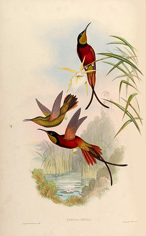
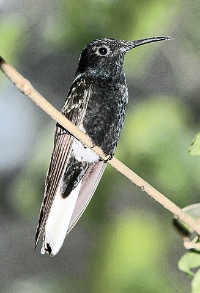
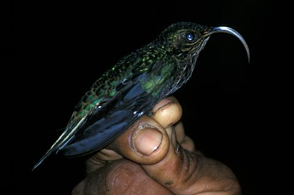
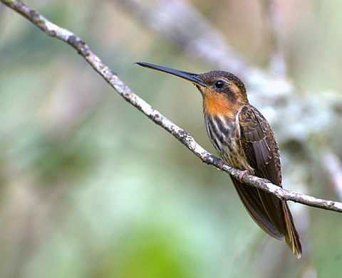
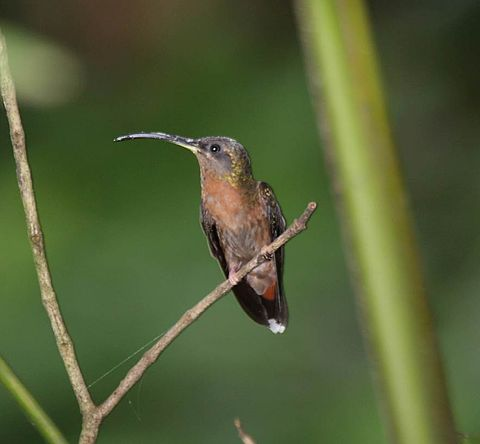

| Зображення | Рід | Рід Латиницею | Підродина |
|---|---|---|---|
|  | Колібрі-топаз | Topaza | Florisuginae |
|  | Колібрі-якобін | Florisuga | Florisuginae |
|  | Ерміт-серподзьоб | Eutoxeres | Phaethornithinae |
|  | Прибережний ерміт | Ramphodon | Phaethornithinae |
|  | Ерміт-самітник | Glaucis | Phaethornithinae |